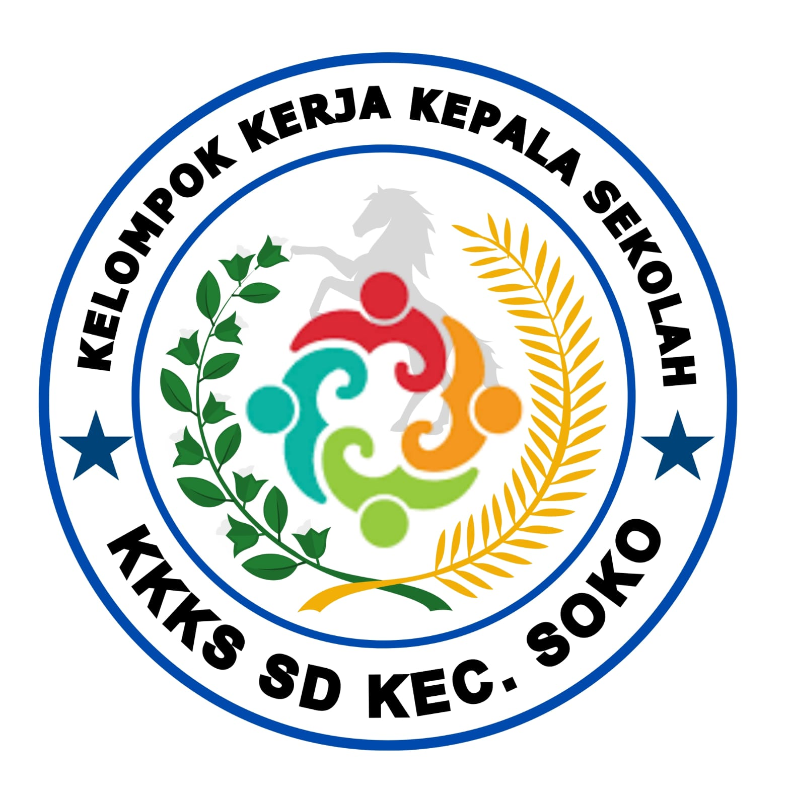

Tentang Kami
Kelompok Kerja Kepala Sekolah (K3S) Kecamatan Soko merupakan wadah profesional bagi kepala sekolah dalam meningkatkan mutu pendidikan, manajemen sekolah, dan kolaborasi antar lembaga pendidikan.


Kelompok Kerja Kepala Sekolah SD Kabupaten Tuban
Kelompok Kerja Kepala Sekolah (K3S) Kecamatan Soko merupakan wadah profesional bagi kepala sekolah dalam meningkatkan mutu pendidikan, manajemen sekolah, dan kolaborasi antar lembaga pendidikan.
Terwujudnya kepala sekolah yang profesional, inovatif, dan berdaya saing.
Rapat koordinasi & evaluasi.
Workshop & pelatihan.
Kegiatan bersama.
📍 Kecamatan Soko, Tuban
📧 k3s.soko@gmail.com
📱 08xxxxxxxxxx